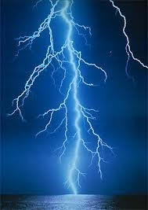
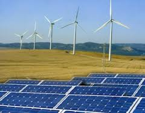
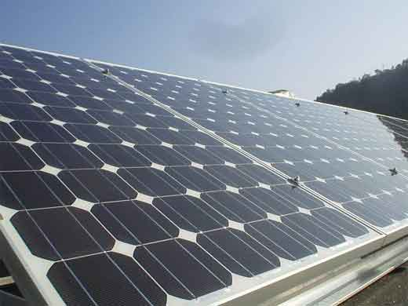

| Energia Elettrica | In fisica, l'energia potenziale elettrica, anche detta energia potenziale elettrostatica, è l'energia potenziale del campo elettrostatico. Si tratta dell'energia posseduta da una distribuzione di carica elettrica, ed è legata alla forza esercitata dal campo generato dalla distribuzione stessa. Insieme all'energia magnetica, l'energia potenziale elettrica costituisce l'energia del campo elettromagnetico. |  |
| Produzione Energia Elettrica | La produzione di energia elettrica rappresenta il 'primo passaggio' nel processo che conduce dalla produzione fino all'utilizzatore finale di energia elettrica. Le altre fasi del processo sono la trasmissione di energia elettrica e la distribuzione di energia elettrica. Tipicamente la produzione avviene per conversione sempre a partire da una fonte primaria di energia attraverso le centrali elettriche e regolata dal dispacciamento (produzione centralizzata) oppure attraverso sistemi di autoproduzione attestati sulla rete elettrica di distribuzione (produzione distribuita |  |
| Pannelli Fotovoltaici | Un modulo fotovoltaico è un dispositivo optoelettronico, composto da celle fotovoltaiche, in grado di convertire l'energia solare incidente direttamente in energia elettrica mediante effetto fotovoltaico, tipicamente impiegato come generatore di corrente in un impianto fotovoltaico. Può essere meccanicamente preassemblato a formare un pannello fotovoltaico, pratica caduta in disuso con il progressivo aumento delle dimensioni dei moduli, che ne hanno di fatto incorporato le finalità. Può essere esteticamente simile al pannello solare termico, ma, pur appoggiandosi entrambi sulla captazione dell'energia solare (radiazione solare) come fonte di energia primaria, hanno scopi e funzionamento molto differenti. |  |